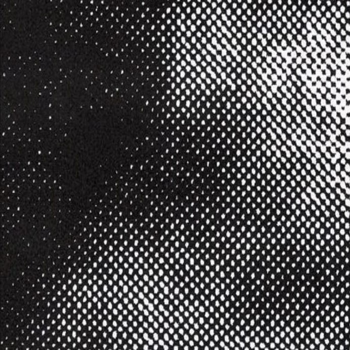
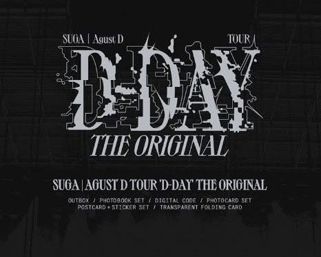
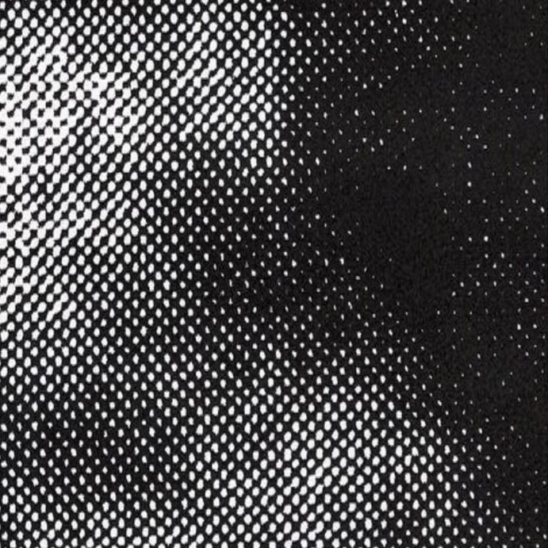
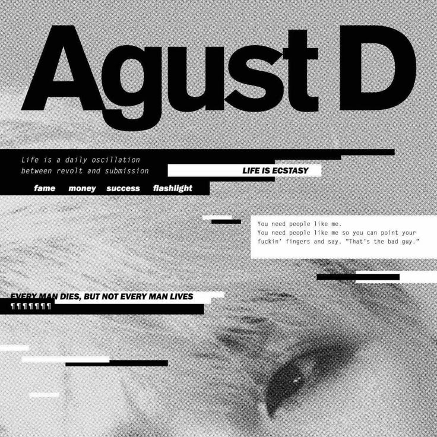
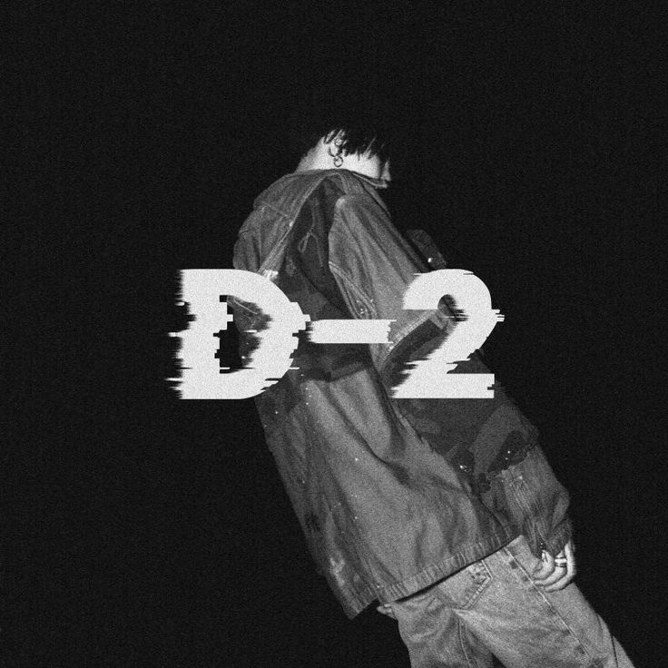
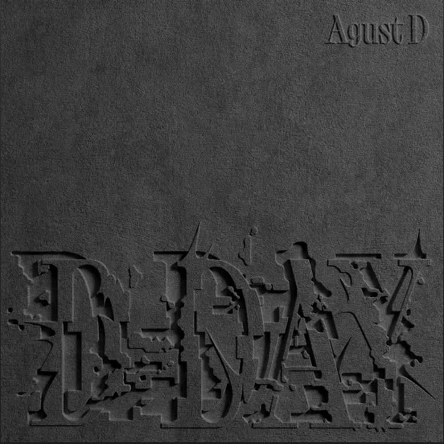

Entre 2016 et 2023, Agust D a constitué une véritable trilogie au travers de ses albums, abordant des thèmes tels que la dépression, les tentatives de suicide ou le surmenage, souvent passé sous silence dans l'industrie musicale coréenne. Ses musiques en sont donc imprégnées, de toutes ses émotions déchirantes qu'il nous livre au travers de ses paroles. Elle transparaissent avec une clarté déconcertante, faisant vivre et ressentir tout ce qu'il a vécu à ses auditeurs. Ses productions osnt avant tout un message d'espoir.
Les titres inscrits dans le tableau sont cliquables, menant directement à la musique disponible sur YouTube !
| Année | Album | Tracklist |
|---|---|---|
| 2016 |
 |
|
| 2020 |
 |
|
| 2023 |
 |